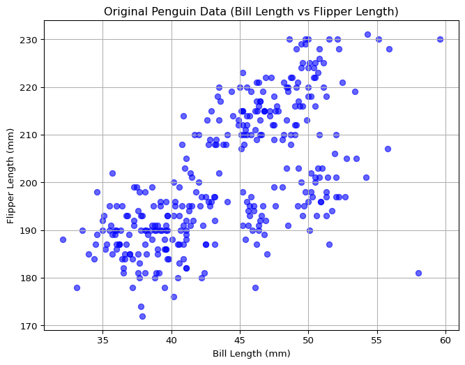
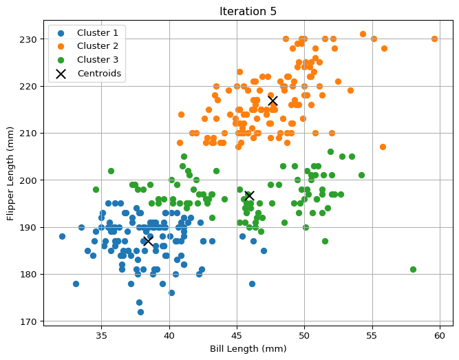
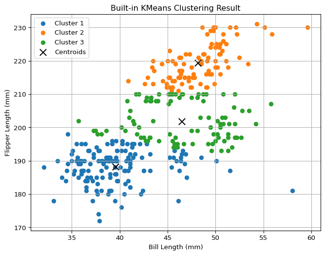
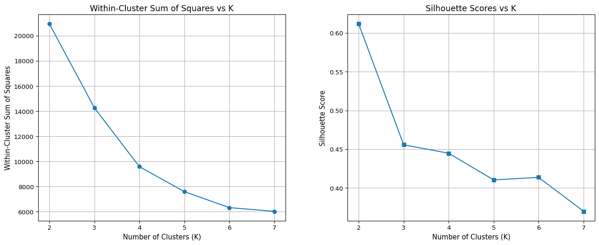
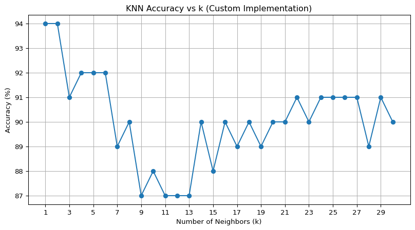

This research paper investigates two fundamental machine learning approaches: the K-means algorithm, an unsupervised learning method used for clustering data points into groups, and K-Nearest Neighbors (KNN), a classic supervised learning algorithm applied to both classification and regression tasks.
1a. K-Means
The first research topic is K-means algorithm, which is an unsupervised machine learning algorithm that used for clustering data points into groups based on the similarity. It aims to partition a dataset into K distinct clusters, which each data point belongs to the cluster with the nearest mean (cluster centroid).
import pandas as pdfile_path ='palmer_penguins.csv'penguins_df = pd.read_csv(file_path)penguins_df.head()
The Palmer Penguins dataset is used for this K-means clustering task. It contains various measurements of penguins living on the Palmer Archipelago in Antarctica. And there are no missing values in the whole dataset.
Here’s the information in this Palmer Penguins dataset:
species - species of penguin (Adelie, Gentoo, Chinstrap)
island - island where the penguin was found (Torgersen, Biscoe, Dream)
bill_length_mm - length of the culmen in millimeters, as the culmen is the dorsal ridge atop the bill.
bill_depth_mm - depth of the culmen in millimeters, as the culmen is the dorsal ridge atop the bill.
flipper_length_mm - length of the flipper in millimeters
body_mass_g - body mass in grams
sex - sex of the penguin (male/female)
year - the year the data was collected for penguins observations.
Next，we’ll proceed to normalize the data.
import matplotlib.pyplot as pltfeatures = penguins_df[['bill_length_mm', 'flipper_length_mm']]plt.figure(figsize=(8, 6))plt.scatter(features['bill_length_mm'], features['flipper_length_mm'], c='blue', alpha=0.6)plt.xlabel('Bill Length (mm)')plt.ylabel('Flipper Length (mm)')plt.title('Original Penguin Data (Bill Length vs Flipper Length)')plt.grid(True)plt.show()X = features.values

print("First five rows of input features:\n", X[:5])
First five rows of input features:
[[ 39.1 181. ]
[ 39.5 186. ]
[ 40.3 195. ]
[ 36.7 193. ]
[ 39.3 190. ]]
Here, we’ve plotted the original penguin data using bill length and flipper length, and ensuring that the data is now ready in numerical format.
Continue, we’ll proceed to implement the customized K-means algorithm and show clustering process across iterations by step-by-step plots. We’ll choose K=3 as an example, representing the 3 species of penguins (Adelie, Gentoo, Chinstrap) in the dataset.
import numpy as npdef initialize_centroids(X, k):"Randomly initialize k centroids from the dataset" indices = np.random.choice(X.shape[0], k, replace=False)return X[indices]def assign_clusters(X, centroids):"Assign each point to the nearest centroid" distances = np.linalg.norm(X[:, np.newaxis] - centroids, axis=2)return np.argmin(distances, axis=1)def update_centroids(X, labels, k):"Compute new centroids as the mean of assigned points" new_centroids = np.array([X[labels == i].mean(axis=0) for i inrange(k)])return new_centroidsdef has_converged(old_centroids, new_centroids, tol=1e-4):"Check if centroids have stopped changing"return np.all(np.linalg.norm(old_centroids - new_centroids, axis=1) < tol)def plot_clusters(X, labels, centroids, iteration):"Visualize clusters and centroids" plt.figure(figsize=(8, 6))for i inrange(len(centroids)): plt.scatter(X[labels == i, 0], X[labels == i, 1], label=f'Cluster {i+1}') plt.scatter(centroids[:, 0], centroids[:, 1], c='black', marker='x', s=100, label='Centroids') plt.title(f'Iteration {iteration}') plt.xlabel('Bill Length (mm)') plt.ylabel('Flipper Length (mm)') plt.legend() plt.grid(True) plt.show()k =3max_iter =10centroids = initialize_centroids(X, k)for i inrange(max_iter): labels = assign_clusters(X, centroids) plot_clusters(X, labels, centroids, i +1) new_centroids = update_centroids(X, labels, k)if has_converged(centroids, new_centroids):print(f'Converged after {i+1} iterations')break centroids = new_centroids.copy()

Converged after 6 iterations
We can see that the custom K-means implementation successfully converged after 6 iterations with K=3, and found that the clusters were stabilized across different steps.
Next, we’ll compare the customized K-means implementation results with the built-in KMeans from Python to assess the cluster similarity.
from sklearn.cluster import KMeanskmeans_model = KMeans(n_clusters=3, random_state=42)kmeans_labels = kmeans_model.fit_predict(X)kmeans_centroids = kmeans_model.cluster_centers_plt.figure(figsize=(8, 6))for i inrange(3): plt.scatter(X[kmeans_labels == i, 0], X[kmeans_labels == i, 1], label=f'Cluster {i+1}')plt.scatter(kmeans_centroids[:, 0], kmeans_centroids[:, 1], c='black', marker='x', s=100, label='Centroids')plt.title('Built-in KMeans Clustering Result')plt.xlabel('Bill Length (mm)')plt.ylabel('Flipper Length (mm)')plt.legend()plt.grid(True)plt.show()

Above is the clustering result using scikit-learn’s built-in KMeans algorithm with K=3.
Comparing customized K-means implementation results with the built-in KMeans from Python’s scikit-learn, we found that :
The customized K-means implementation performed similarly to the built-in KMeans version, with centroids and clusters converging visually to similar groupings.
Both methods reflect three distinct clusters among penguins using bill length and flipper length.
Continue, we’ll calculate both the within-cluster-sum-of-squares and silhouette scores by scikit-learn’s built-in KMeans algorithm and plot the results for various numbers of clusters (ie, K=2,3,…,7).
from sklearn.metrics import silhouette_scoreX = penguins_df[['bill_length_mm', 'flipper_length_mm']]k_values =range(2, 8)wcss = []silhouette_scores = []for k in k_values: kmeans = KMeans(n_clusters=k, random_state=42) labels = kmeans.fit_predict(X) wcss.append(kmeans.inertia_) silhouette_scores.append(silhouette_score(X, labels))plt.figure(figsize=(15, 6))plt.subplot(1, 2, 1)plt.plot(k_values, wcss, marker='o')plt.title('Within-Cluster Sum of Squares vs K', fontsize=13)plt.xlabel('Number of Clusters (K)', fontsize=11)plt.ylabel('Within-Cluster Sum of Squares', fontsize=11)plt.grid(True)plt.subplot(1, 2, 2)plt.plot(k_values, silhouette_scores, marker='s')plt.title('Silhouette Scores vs K', fontsize=13)plt.xlabel('Number of Clusters (K)', fontsize=11)plt.ylabel('Silhouette Score', fontsize=11)plt.grid(True)plt.subplots_adjust(left=0.12, right=0.95, wspace=0.25)plt.show()

Regarding the Within-Cluster Sum of Squares graph, we discerned a noticeable “elbow” around the K=3, which means that the increasing the number of clusters beyond 3 leads to smaller improvements in reducing the within within-cluster sum of squares. Therefore, K=3 is the recommended number of clusters from the within-cluster-sum-of-squares.
In terms of the Silhouette Score graph, it measures the level of separation and compact the clusters are - the higher the score, the better the overall clustering quality. This graph shows that the highest silhouette scores at K=2 and K=3, with K=3 being slightly lower than K=2 but still performs strong. Also, K=3 corresponds with the structure of the data (i.e. three distinct species of penguins.
Considering both methods, K=3 is the most reasonable choice for the optimal number of clusters. This also aligns better with the overall structure of the data (i.e. three distrinct species of penguin (Adelie, Gentoo, Chinstrap)).
2a. K Nearest Neighbors
The second research topic is K Nearest Neighbors (KNN), which is a simple, intuitive supervised machine learning algorithm used for classification and regression. We will generate a synthetic dataset for the k-nearest neighbors algorithm.
Here, we devise a custom KNN implementation and make a comparsion between its results and scikit-learn’s KNeighborsClassifier in Python. We found that the both customized KNN implementation and scikit-learn’s KNeighborsClassifier yields the same accuracy: 92% on the test dataset.
E.
k_range =range(1, 31)accuracies = []for k in k_range: y_pred = knn_predict(X_train, y_train, X_test, k) acc = accuracy_score(y_test, y_pred) accuracies.append(acc *100) plt.figure(figsize=(10, 5))plt.plot(k_range, accuracies, marker='o')plt.title('KNN Accuracy vs k (Custom Implementation)')plt.xlabel('Number of Neighbors (k)')plt.ylabel('Accuracy (%)')plt.xticks(range(1, 31, 2))plt.grid(True)plt.show()best_k = k_range[np.argmax(accuracies)]best_accuracy =max(accuracies)(best_k, best_accuracy)

Here, we run the KNN implementation function with k=1,…,k=30, each time noting the percentage of correctly-classified points from the test dataset. Above is the plot of KNN accuracy (%) vs number of neighbors (k) for k = 1 to 30 using the customized KNN implementation. We found that:
The optimal value of k is k=1, which gives the highest accuracy of 94% on the test dataset.
Although both k=1 and k=2 yield the same accuracy, k=1 is preferred here due to its better adaptation to local, nonlinear structure.
Accuracy decreases as number of k increases, which aligns with this nonlinear, locally-sensitive boundary - small k values can better adapt to local shapes.